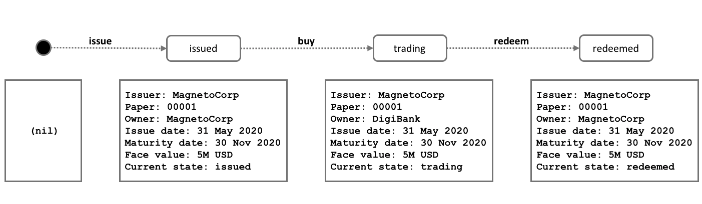
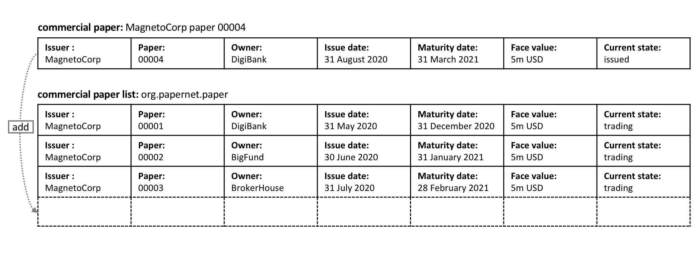
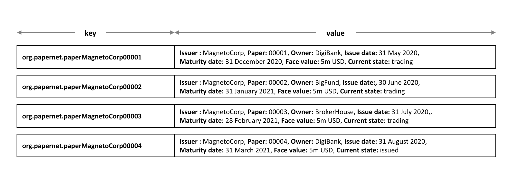

Process and Data Design¶
受众:架构师、应用程序开发者和智能合约开发者、业务专家
本主题向您展示如何在PaperNet中设计商业票据流程及其相关数据结构。我们的分析强调，使用状态和交易对PaperNet建模提供了一种精确的方法来理解正在发生的事情。现在我们将详细阐述这两个紧密相关的概念，以帮助我们随后设计PaperNet的智能合约和应用程序。
Lifecycle¶
正如我们所看到的，在处理商业票据时，有两个重要的概念引起了我们的关注，状态和交易。事实上，这对于所有区块链用例都是正确的;有价值的概念对象，建模为状态，其生命周期转换由交易描述。对状态和交易的有效分析是成功实现的必要起点。
我们可以用状态转换图来表示商业票据的生命周期:
 develop.statetransition The state transition
diagram for commercial paper. Commercial papers transition between issued,
trading and redeemed states by means of the issue, buy and
redeem transactions.
develop.statetransition The state transition
diagram for commercial paper. Commercial papers transition between issued,
trading and redeemed states by means of the issue, buy and
redeem transactions.
查看状态图如何描述商业票据如何随时间变化，以及特定交易如何控制生命周期转换。在超级账本Fabric中，智能合约实现了商业票据在不同状态之间转换的交易逻辑。商业票据状态实际上是在账本世界状态中持有的;让我们仔细看看。
Ledger state¶
回想一下商业票据的结构:
 develop.paperstructure A commercial paper can be
represented as a set of properties, each with a value. Typically, some
combination of these properties will provide a unique key for each paper.
develop.paperstructure A commercial paper can be
represented as a set of properties, each with a value. Typically, some
combination of these properties will provide a unique key for each paper.
看看一个商业票据属性的怎样具有值00001，而面值属性的值是500万美元。最重要的是，当前的状态属性表明商业票据是发行、交易还是赎回。综合起来，所有的属性构成了商业票据的状态。此外，这些单独商业票据状态的全部集合构成账本世界状态。
所有账本状态共享此表格;每一个都有一组属性，每个属性都有不同的值。状态的这种多属性特性是一个强大的特性——它允许我们将一个Fabric状态看作一个向量，而不是一个简单的标量。然后，我们将关于整个对象的事实表示为单个状态，这些状态随后经历由交易逻辑的控制进行转换。Fabric状态实现为键/值对，其中值是对象属性编码到一个格式中（通常是JSON）。账本数据库可以支持针对这些属性的高级查询操作，这对于复杂的对象检索非常有帮助。
看看MagnetoCorp的票据00001如何表示为一个状态向量，该状态向量根据不同的交易促进进行转换:
develop.paperstates A commercial paper state is brought into existence and transitions as a result of different transactions. Hyperledger Fabric states have multiple properties, making them vectors rather than scalars.
请注意，每一张票据都是以空状态开始的，从技术上讲，空状态是票据的nil状态，因为它不存在！请参阅票据00001是如何由发行交易产生的，以及随后如何由于购买和赎回交易而更新它。
注意每个状态是如何自我描述的;每个属性都有一个名称和一个值。尽管我们所有的商业票据目前都具有相同的属性，但这并不需要一直如此，因为超级账本Fabric支持不同状态具有不同属性。这允许相同的账本世界状态包含相同资产的不同形式以及不同类型的资产。它还使更新一个状态的结构成为可能;设想一个需要额外数据字段的新规则。灵活的状态属性支持数据随时间演化的基本需求。
State keys¶
在大多数实际应用中，状态将具有在给定上下文中拥有唯一标识它的属性组合——这是键(key)。PaperNet商业票据的键是由发行者和票据属性串联而成；所以对于MagnetoCorp的第一张票据，它是MagnetoCorp00001。
状态键允许我们唯一地标识一张票据；它是作为发行交易的结果创建的，随后由购买和赎回交易更新。超级账本Fabric要求账本中的每个状态都有一个唯一的键。
当可用属性集中没有唯一键可用时，应用程序通过交易输入决定唯一键来创建状态。这个唯一的键通常与某种形式的UUID一起使用，虽然可读性较差，但这是一种标准实践。重要的是，账本中的每个状态对象都必须有唯一的键。
Multiple states¶
如我们所见，PaperNet中的商业票据以状态向量的形式存储在账本中。能够从账本中查询不同的商业票据是合理的需求；例如:查找MagnetoCorp发行的所有票据，或者:查找处于赎回状态的MagnetoCorp发行的所有票据。
为了使这类搜索任务成为可能，将所有相关的票据放在一个逻辑列表中是很有帮助的。PaperNet设计结合了商业票据列表的思想——一个逻辑容器，每当发行或更改商业票据时，该容器都会更新。
Logical representation¶
将所有PaperNet商业票据放在一个商业票据列表中是有帮助的:
develop.paperlist MagnetoCorp’s newly created commercial paper 00004 is added to the list of existing commercial papers.
新票据可以作为发行交易的结果添加到列表中，并且已经在列表中的票据可以通过购买或赎回交易进行更新。查看列表如何具有描述性名称:org.papernet.papers;使用这种DNS名称是一个非常好的主意，因为精心选择的名称将使您的区块链设计对其他人更加直观。这一观点同样适用于智能合约名称。
Physical representation¶
当然，在PaperNet中只考虑一张票据的列表是正确的 – org.papernet.papers – 列表最好实现为一组单独的Fabric状态，其组合键将状态与其列表关联起来。这样，每个状态的组合键都是惟一的，并且支持有效的列表查询。
develop.paperphysical Representing a list of PaperNet commercial papers as a set of distinct Hyperledger Fabric states
注意，列表中的每张票据都是由向量状态表示的，其中包含连接org.papernet.paper、发行人及票据属性形成的惟一组合键。这种结构有两个原因: - 它允许我们检查账本中的任何状态向量，以确定它在哪个列表中，而不需要参考单独的列表。这类似于观察一群体育迷，通过他们所穿衬衫的颜色来确定他们支持哪支球队。体育迷们宣布他们的忠诚;我们不需要粉丝名单。 - 超级账本Fabric内部使用并发控制机制来更新账本，这样将票据保存在单独的状态向量中可以大大减少共享状态冲突的机会。这种冲突要求交易重新提交，使应用程序设计复杂化，并降低性能。
It allows us to examine any state vector in the ledger to determine which list it’s in, without reference to a separate list. It’s analogous to looking at set of sports fans, and identifying which team they support by the colour of the shirt they are wearing. The sports fans self-declare their allegiance; we don’t need a list of fans.
Hyperlegder Fabric internally uses a concurrency control mechanism to update a ledger, such that keeping papers in separate state vectors vastly reduces the opportunity for shared-state collisions. Such collisions require transaction re-submission, complicate application design, and decrease performance.
这第二点实际上是超级账本Fabric的一个关键要点；状态向量的物理设计对于优化性能和行为非常重要。把你们的状态分开!
Trust relationships¶
我们已经讨论了网络中的不同角色(如发行者、交易员或评级机构)以及不同的商业利益如何决定谁需要签署交易。在Fabric中，这些规则由所谓的背书策略捕获。规则可以设置在链码粒度上，也可以设置在单个状态键上。
这意味着在PaperNet中，我们可以为整个命名空间设置一个规则，以确定哪些组织可以发布新票据。稍后，可以为单个票据设置和更新规则，以捕获购买和赎回交易的信任关系。
在下一个主题中，我们将向您展示如何结合这些设计概念来实现PaperNet商业票据智能合同，然后在应用程序中加以利用!